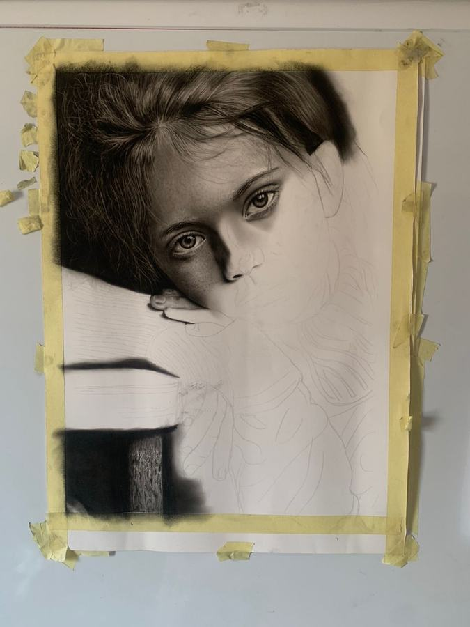

01 / 02
Too Much For Me
2025 · Charcoal on paper · 23.6 × 18.1 in · Available
Through the child's quiet gaze, worn hands and waiting posture, the work reflects exhaustion, vulnerability and a longing for stillness. The nature of that burden remains unresolved, leaving room for the viewer's own interpretation.
